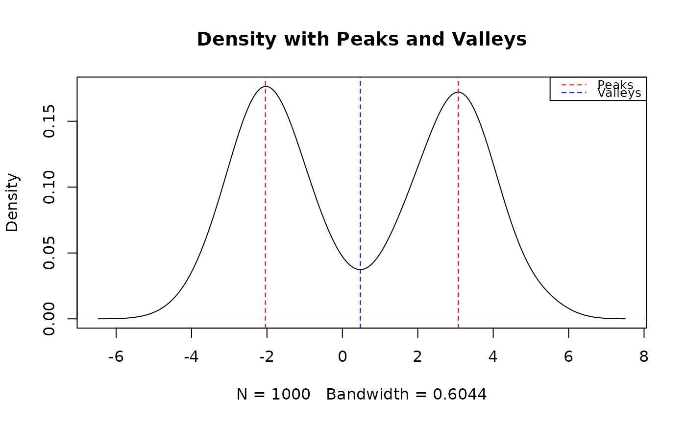
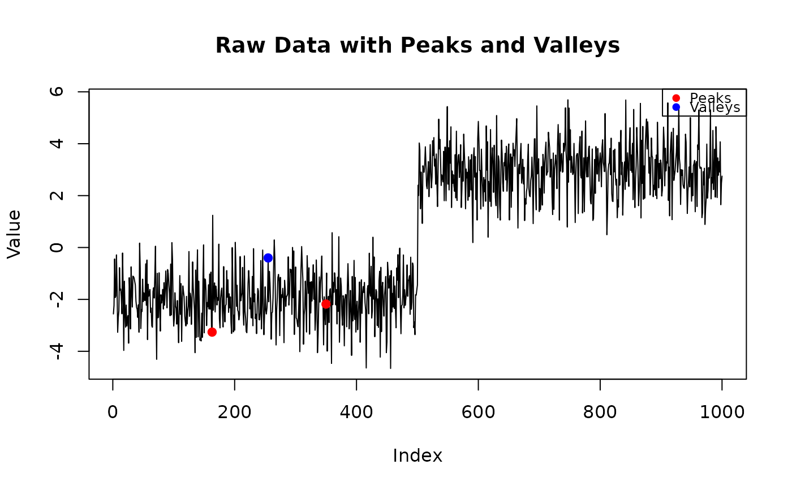

This function identifies peaks and valleys in the density estimation of the input data. It computes the prominence of each peak and allows the user to filter peaks based on a prominence threshold. The function also provides the option to visualize the data as either a density plot, a raw line plot, or no display.
Arguments
- x
A numeric vector of data for which the modal peaks are to be identified.
- prominence_threshold
A numeric value specifying the minimum prominence of peaks to be considered. If `NULL`, no prominence threshold is applied. Default is 0.005.
- display_type
A character string indicating the type of output display. Options are: - `"density"` for a density plot with peaks and valleys marked (default), - `"raw"` for a raw line plot with peaks and valleys marked, - `"none"` for no plot, just returning the peak and valley data.
Value
A list containing: - `peak_x`: The x-coordinates of the detected peaks. - `peak_y`: The y-coordinates (density values) of the detected peaks. - `valley_x`: The x-coordinates of the detected valleys (or NULL if none). - `valley_y`: The y-coordinates (density values) of the detected valleys (or NULL if none). - `prominences`: The prominence of each peak (or NULL if none). - A message indicating the number of modes in the distribution.
Examples
# Simulate a bimodal distribution
set.seed(123)
x <- c(rnorm(500, mean = -2, sd = 1), rnorm(500, mean = 3, sd = 1))
# Call the function with density plot (default)
results_density <- modal_peaks(x, prominence_threshold = 0.005, display_type = "density")
#> The distribution is bimodal (2 peaks detected).

# Call the function with raw line plot
results_raw <- modal_peaks(x, prominence_threshold = 0.005, display_type = "raw")
#> The distribution is bimodal (2 peaks detected).

# Call the function with no display (just returns results)
results_none <- modal_peaks(x, prominence_threshold = 0.005, display_type = "none")
#> The distribution is bimodal (2 peaks detected).